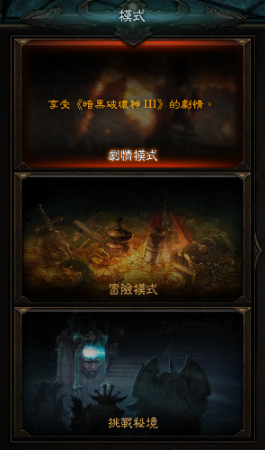
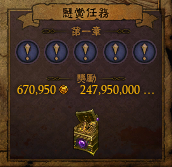
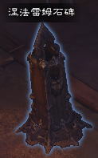
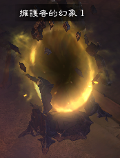
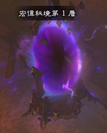

冒險模式
當你擊敗劇情模式最後章節的頭目後，便立即開啟冒險模式。
懸賞任務
在冒險模式中，你能夠接下懸賞任務。
完成懸賞任務後，玩家除了會獲得金幣和寶物之外，還會得到水晶般的血岩碎片。血岩碎片可用來跟城鎮裡的商人卡達拉購買赫拉迪姆寶藏和來歷不明的神祕古物。
涅法雷姆秘境
涅法雷姆秘境是另一片天地，有隨機產生的地形地貌，裡頭充滿無法預料的怪物。
擊敗涅法雷姆秘境中足夠的怪物數量便能召喚一位秘境守護者，這位對手具有隨機且強大的能力...擊敗它還能獲得豐富的寶藏。
涅法雷姆石碑的啟動:選擇是要開啟涅法雷姆秘境或是宏偉秘境。
 挑戰秘境

進行挑戰秘境模式時，你會化身為另一名涅法雷姆，與其他人面對同樣的威脅與處境。你必須戰勝一切才能完成挑戰。開始挑戰秘境模式時你會來到挑戰區，在那裡你可以使用靈魂之鏡確認主動與被動技能、魔方能力與身上的裝備。那裡也有不會還手的幽靈可以測試新技能，因此儘管花點時間在那裡試試身手，確定你已經準備就緒。
如果你成功完成挑戰，你將會收到挑戰秘境寶箱，裡頭有製作材料、寶石、血岩碎片與傳奇物品等各種有用的東西。如果完成挑戰的速度夠快，你還有機會在天梯榜上留名。